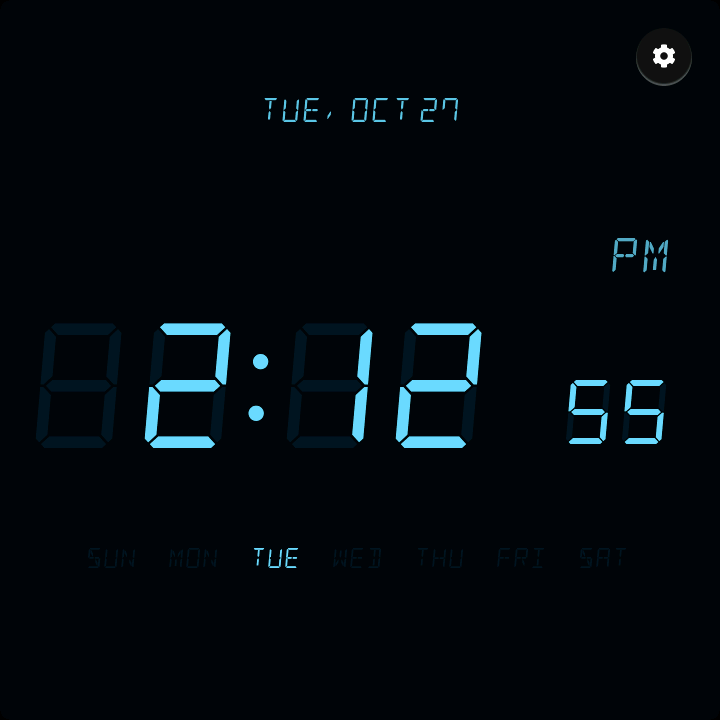
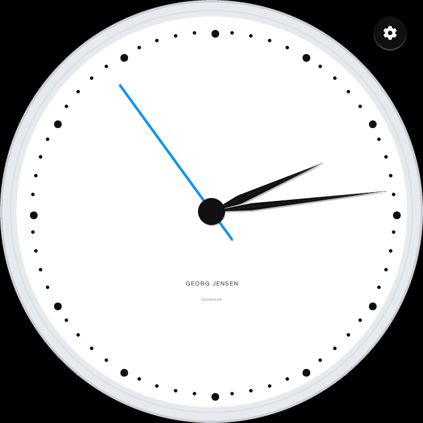

Themes
06:30Tomorrow
Update available
Touch Clock · UI direction · 720 × 720 round IPS · LVGL 9.3
Orbit takes the best ideas from Apple's circular interfaces, watchOS and the Apple Watch modular faces, and applies them to a clock that lives on a nightstand. The surfaces are pure black, so the round panel disappears into the dark room. Content sits on large dark platters. Each area has its own system tint: Wi-Fi blue, Night indigo, Alarms orange, Other graphite. Each layout follows the circle: titles sit at the top of the arc, columns narrow towards the poles, primary actions are round buttons at the bottom, and values that are naturally circular use arcs and rings. At 60 cm, with a sleepy thumb, that means big targets, few words and calm contrast. Depth comes from layering, a flat tint and one soft shadow, never blur, so every pixel maps to plain LVGL objects.
Rows are sized from the chord at their outer corners, so nothing touches the bezel. A 500 px list column stays clear of the edge from y 116 to 604.
Tints colour badges, active switches, and arc fills. Everything else is white, grey, or black, so the colour always tells you where you are.
Every target is at least 72 px. Primary actions are 80 to 96 px circles at the bottom of the arc. Back is the round button at the top of every screen.
Built from solid fills, radii, 2 px borders, lv_arc, A8 icons, one cached shadow per sheet, and a dim snapshot under each sheet.
All values are device pixels on the 720 × 720 panel. Colours are flat sRGB and convert cleanly to RGB565. Tinted backgrounds are precomputed flat “washes” instead of alpha.
#000000screen, everywhere#1C1C1Erows, cards, sheets#2C2C2Eround buttons, fields#3A3A3Cswitch off, arc track#AEAEB2subtitles · 9.6:1#6E6E73chevrons, off states#0A84FFwash #183350#5E5CE6wash #2A2A4A#FF9F0Awash #4E391A · black text#636366active: Silver #E5E5EA#BF5AF2wash #402A4D#FFD60Aarc fill only#FF375Fquick toggle on#FF453Awash #4E2524#1F1F21+ 1 px #333336 rim#8A87D8night overlay text#2E2D5Ctime-to-alarm arcface × 24%over black, no blurOrbit fit. A platter's half-width comes from the chord at its outermost corner centre:
w/2 = √((360 − m − r)² − dy²) + r
Here m is the gap to the bezel (24 px, or 48 px on hero lists), r is the corner radius, and dy is the corner centre's distance from y 360. Static screens size each row this way once, at layout time. Scrolling lists use a fixed 500 px column, so nothing is transformed per frame.
Spacing scale: 4 · 8 · 16 · 24 · 32 · 48. Vertical anchors: back button 24–88 · title 100–148 · content from 172.
The twelve screens from the brief, at true device size, scaled to 56% here. Click any screen to see it at 1:1. Further states, such as scrolled pages, the math challenge and the dark face, follow below.

These show how the long pages continue when scrolled: the back button stays fixed and the content passes under a short black scrim. They also cover the second page of the alarm editor, the math challenge, and the face controls on a dark face.


lv_obj with bg_color and radius. The sheet shadow is shadow_width 56, ofs_y ±14, opa 60%, on the sheet only, and cached.lv_snapshot or the face's own redraw, drawn as one lv_image at opa 24% over black.lv_arc with arc_rounded. The knob is LV_PART_KNOB, and brightness runs in reverse mode from 30° to 150°.lv_rollers in infinite mode. The main font is Title 40 and the selected font is Time L 112.
Night face
Tap to choose